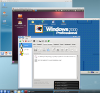
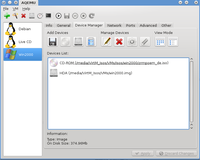
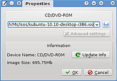
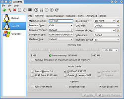
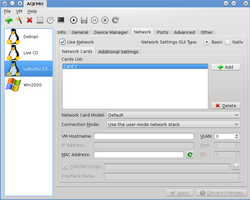

AQEMU
Dieser Artikel wurde für die folgenden Ubuntu-Versionen getestet:
Ubuntu 16.04 Xenial Xerus
Ubuntu 14.04 Trusty Tahr
Zum Verständnis dieses Artikels sind folgende Seiten hilfreich:
AQEMU  ist eine grafische Oberfläche für die Virtualisierung mittels QEMU und KVM. Mit AQEMU lassen sich schnell virtuelle Maschinen für verschiedene Betriebssysteme, Architekturen und Konfigurationen einrichten. Die dafür notwendigen Einstellungen werden bequem per Maus erledigt und sind dank eines Einrichtungsassistenten auch für Virtualisierungs-Anfänger einfach zu bewältigen.
ist eine grafische Oberfläche für die Virtualisierung mittels QEMU und KVM. Mit AQEMU lassen sich schnell virtuelle Maschinen für verschiedene Betriebssysteme, Architekturen und Konfigurationen einrichten. Die dafür notwendigen Einstellungen werden bequem per Maus erledigt und sind dank eines Einrichtungsassistenten auch für Virtualisierungs-Anfänger einfach zu bewältigen.
Die Oberfläche von AQEMU aus den Paketquellen ist derzeit nur in den Sprachen englisch und russisch verfügbar, ab Version 0.8.1 ist deutsch implementiert. In der Version unter Trusty kommt allerdings statt der Sprache "deutsch" "kyrillisch".
|  |
| Drei Systeme auf einem Kubuntu 10.04 Desktop:
|
Installation¶
 mit
mit Der erste Start¶
Nach dem ersten Start erscheint zunächst ein Konfigurationsassistent mit folgenden Seiten:
|  |
| Der Device Manager |
| Seite | Beschreibung |
| 1 | - Sprache einstellen (derzeit nur englisch und russisch), deutsch zwar angeboten, ist aber russisch! |
| 2 | - Speicherort für die virtuellen Maschinen bestimmen - Die Option "Use Device manager" sollte aktiviert werden, da sich die Beschreibungen in diesem Artikel auf die Darstellung mit dem Device manager beziehen - Der Punkt "Include VNC Display" sollte deaktiviert bleiben. |
| 3 | - Auf der Seite "Find Emulators" sollte der Knopf "Search" betätigt werden, damit AQEMU alle Emulatoren findet und korrekt ansprechen kann. |
Danach ist die Erstkonfiguration abgeschlossen.
Gastsystem einrichten¶
Mit Hilfe des Wizards ist es recht einfach ein Gastsystem einzurichten. Der Wizard kümmert sich z.B. um die automatische Erstellung einer virtuellen Festplatte. Nach dem Start des Wizards sollte man auf der Seite
"VM Hardware Template" im Feld "Template -> OS Type" das Betriebssystem aussuchen, welches man installieren möchte. Diese Auswahl nutzt AQEMU um dem Nutzer Betriebssystemspezifische Einstellungen (z.B. RAM-Größe oder die Größe der virtuellen Festplatte) ab zu nehmen.
Alle anderen Einstellungen können bedenkenlos übernommen werden. Nachdem der Wizard abgeschlossen wurde, erscheint die VM im linken Teil des Fensters. Nun hat man die Möglichkeit alle Einstellungen nochmal zu überprüfen.
Um ein Betriebssystem auf die virtuelle Festplatte installieren zu können, benötigt man Zugriff auf ein Installationsmedium.
Installationsmedium CD/DVD einrichten¶
|  |
| CD-ROM Dialog |
Im Reiter "Device manager" im Bereich "Add Devices" das CD-Symbol

Im Fenster "Properties" ist nun bei Vorhandensein eines CD-ROM-Laufwerks der Pfad /dev/cdrom voreingestellt. Wer Zugriff auf ein CD-ROM Laufwerk benötigt, sollte die Einstellung beibehalten. Möchte man dagegen ein Iso-Abbild (z.B.: Von einer Ubuntu Live-CD) benutzen, klickt man auf das Ordner-Symbol und sucht die entsprechende Datei per Dateidialog aus.
Damit ist die Einrichtung dieses Gastsystems abgeschlossen. Im Reiter General sollte man noch folgende Einstellungen überprüfen:
"Boot-Priority" sollte auf "CD-ROM" stehen
"Keybord Layout" sollte auf "de" stehen
"Memory Size" evtll. überprüfen
Über "VM -> Start" oder Strg + S kann das Gastsystem nun gestartet werden.
Nach erfolgreicher Installation, ist im Reiter General der Wert für "Boot-Priority" auf "HDD" zu setzen damit beim nächsten Start von der virtuellen Festplatte gebootet wird.
Einstellungen für einzelne Gastsysteme¶
Alle Optionen sind in Reitern thematisch gruppiert. Im folgenden eine Auflistung von einigen wichtigen Einstellungen auf einzelnen Reitern.
Hinweis:
Reiter General¶
| Generelle Einstellungen: | ||
Boot Priority | Auswahl des Gerätes (Device), von dem aus gebootet wird. Über die Schaltfläche können mehrere Bootmedien und die Reihenfolge festgelegt werden. |  |
Computer Type | Angabe der Prozessor Architektur. Ist zusätzlich das Paket qemu-kvm-extras installiert, können außer IBM 32 und IBM 64-bit z.B. auch ARM, MIPS oder SPARc Prozessoren emuliert werden. Werden die zusätzlichen Architekturen nicht angezeigt, sollte man im Menü "File -> Advanced Settings " den Schalter "Find all Emulators" betätigen. | |
Video Card | Die Angabe "Default" ist in den meisten Fällen ausreichend. Wenn man Probleme mit der Auflösung innerhalb des Gastsystems hat, kann man andere Karten versuchen. | |
Keyboard Layout | Hier sollte man "de" für deutsche Tastatur einstellen | |
Memory Size | Hier wird die Speichergröße, die dem Gastsystem zur Verfügung gestellt wird, eingestellt. Der Knopf "Free Memory" zeigt den derzeitig verfügbaren freien Speicherplatz im Wirts-System an. Ein aktualisiert den Wert. | |
Snapshot Mode | Siehe die Option -snapshot im Artikel QEMU Startoptionen. | |
Reiter Network¶
| Netzwerkeinstellungen: | ||
Use Network | Einschalten, um Internetzugang innerhalb der VM zu ermöglichen |  |
Connection Mode | Wer eine Internetverbindung über DHCP nutzt, sollte hier "Use the user mode network stack" wählen. Wird eine feste IP-Adresse genutzt, sollte "Open a TUN/TAP interface" gewählt werden. Mehr dazu im QEMU-Artikel | |
Weitere Merkmale des Programms¶
AQEMU bietet weitere Merkmale, die die Verwendung von QEMU vereinfachen. Die folgende Tabelle listet einige davon und zeigt wo die entsprechenden Funktionen zu finden sind:
| Option | Zu finden unter |
Virtuelle Festplatten konvertieren  | "File -> Convert HDD Image" |
| Sprache der Oberfläche | "File -> General Settings -> Interface Language" |
| Anzeige des Device Managers anstatt gesonderten Reitern für HDD und CD-ROM | "File -> General Settings -> Use Device Manager by Default" |
| Speicherort und Format von Screenshots | "File -> Advanced Settings -> General" |
| Speicherort der Logdatei | "File -> Advanced Settings -> Advanced" |
| Zusätzliche CD-ROM/DVD Geräte | "File -> Advanced Settings -> Other" |
| Informationen, die im Reiter "Info" angezeigt werden sollen | "File -> Advanced Settings -> Information Info Tab" |
| Konfigurationsassistent erneut ausführen | "File -> Run First Run Wizard" |
| Automatische Erstellung einer Skriptdatei, welche das Starten des Gastsystems per Doppelklick aus einem Dateimanager erlaubt. | "VM -> Create Shell Script" |
| Die von AQEMU generierte QEMU/KVM-Befehlszeile anzeigen lassen | "VM -> Show QEMU/KVM Arguments", Icon:  |
Problemlösungen¶
Kein Zugriff auf USB-Geräte¶
Der Zugriff auf USB-Geräte des Host-systems befindet sich laut QEMU-Wiki noch in einem experimentellen Stadium.
QEMU benötigt für die Einbindung von USB-Geräten Lese- und Schreibzugriff. Diese Rechte sind aber nur dem Systemadministrator root vorbehalten.
Lösung: Das Gastsystem mit Rootrechten starten. Man lässt sich über "VM -> Show QEMU/KVM Arguments" die Befehlszeile anzeigen und kopiert den Text in ein Terminal. Dann fügt man den Befehl sudo vor die Befehlszeile.
Links¶
QEMU - Installation, Befehlszeilenoptionen
KVM - Installation, Befehlszeilenoptionen
QEMU Dokumentation
- Offizielle DokumentationQEMU Buch
- ein hilfreiches Nachschlagewerk für QEMU und seine Optionen
- Erstellt mit Inyoka
-
 2004 – 2017 ubuntuusers.de • Einige Rechte vorbehalten
2004 – 2017 ubuntuusers.de • Einige Rechte vorbehalten
Lizenz • Kontakt • Datenschutz • Impressum • Serverstatus -
Serverhousing gespendet von